PathFinder in assemblies
Assembly PathFinder overview
The PathFinder tab helps you work with the components that make up your assembly. It provides alternate ways to view the composition and arrangement of the assembly, besides looking at the graphics in a regular assembly window. You can also use PathFinder to in-place activate a part or subassembly so you can make edits to individual assembly components while viewing the entire assembly.
The PathFinder tab is available when you work in an assembly or a subassembly within the active assembly.
In the Assembly environment, you can also use PathFinder to view, modify, and delete the assembly relationships used to position the parts and subassemblies, reorder parts in an assembly, and to help you diagnose problems in an assembly.
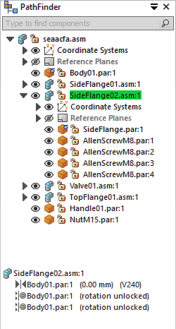
In the Assembly environment, PathFinder is divided into two panes.
-
The top pane lists the components of the active assembly in a folder tree structure. Listed components can include: parts, subassemblies, assembly reference planes, and assembly sketches.
-
The bottom pane shows the assembly relationships applied to the part or subassembly selected in the top pane.
Using the top pane
The top pane of PathFinder allows you to:
-
Use Component Finder to quickly locate components in the assembly structure. Begin typing the name of a part or subassembly that you want to find. Automatic completion of the search text finds all available matches in the document, and displays them in a list. When you click an item in the search list, it is located and highlighted in PathFinder.

-
View components in collapsed or expanded form. For example, when you expand a subassembly, you can view all of its parts.
-
Highlight, select, and clear components for subsequent tasks.
-
Determine the current status of the components within the assembly.
-
Determine how the assembly was constructed.
-
Reorder parts within an assembly.
-
Rename reference planes, sketches, and coordinate systems.
-
Place a component by dragging it into the assembly from PathFinder rather than the Parts Library.
When you hover over a component in the top pane of PathFinder, it is displayed in the graphics window using the highlight color. When you click a component, it is displayed using the Select color. This allows you to associate the component entry in PathFinder with the corresponding component in the graphics window.
When you hover over a component in the assembly window, not only does the component display in PathFinder using the highlight color, but if the component resides in a subassembly, any parent assemblies are also displayed in a lighter shade of that color. The same rule applies after selecting a component. The component is displayed in PathFinder using the select color and parent assemblies are displayed in a lighter shade of the select color.
Figure A shows PathFinder in the highlight color and Figure B shows PathFinder in the select color, with the parent assemblies shown in a lighter shade of those colors.
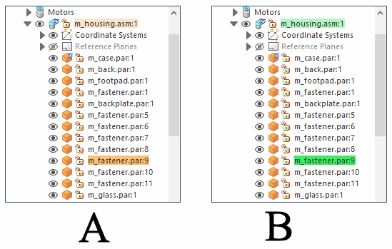
When you hover over or click the top-level assembly in PathFinder, it does not display in the highlight or select color. This improves performance when working with large assemblies.
Because the highlight and selection of components in large assemblies can impact performance, options are available on the Assembly tab in the Solid Edge Options dialog box that allow you to improve the performance when working with large assemblies. For example, options are available that allow you to simplify the display of highlighted and selected components in the graphics window and to turn off the highlighting of components in the graphics window when you hover over them in PathFinder.
For more information on improving performance in large assemblies, see Working with large assemblies efficiently.
Determining the status of a component
The symbols in PathFinder reflect the current status of the components in the assembly. The following table explains the symbols used in the top pane in PathFinder:
|
Legend |
|
|---|---|
|
Active part |
|
|
Inactive part |
|
|
Unloaded part |
|
|
Grounded part |
|
|
Part that is not fully positioned |
|
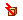 |
Part that has conflicting relationships |
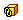 |
Linked part |
|
Assembly copy |
|
|
Simplified assembly |
|
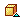 |
Simplified part |
|
Missing component |
|
|
Alternate components part |
|
|
Part position is driven by a 2D relationship in an assembly sketch |
|
 |
Displayed assembly |
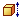 |
Adjustable Part |
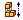 |
Adjustable Assembly |
|
Driven Reference |
|
|
Fastener System |
|
|
Pattern group |
|
|
Pattern item |
|
|
Reference planes |
|
 |
Reference plane |
|
Sketch |
|
 |
Noncombinable sketch (synchronous only) |
 |
Combinable sketch (synchronous only) |
 |
Active sketch (synchronous only) |
|
Weldment |
|
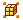 |
Group of parts and subassemblies |
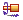 |
Motor |
|
Available |
|
 |
In Work |
|
In Review |
|
 |
Released |
 |
Baselined |
|
Obsolete |
|
|
Limited Update or Limited Save is turned on. |
|
The symbols in PathFinder can also represent combinations of conditions. For example, a symbol can show that a part is hidden and not fully positioned:
Determining how the assembly was constructed
The components in the top pane of PathFinder are listed in the order in which they were placed in the assembly. This can be useful when evaluating design changes. For example, if you delete a single assembly relationship from a part, the symbols for other parts could also change to indicate that the parts are no longer fully positioned. This occurs because the positioning of the other parts depended upon the part from which you removed the relationship. In this example, reapplying the single relationship should cause the other parts to also become fully positioned again.
Making changes to assembly components
You can use the top pane of PathFinder to open or in-place activate a part or subassembly so you can make design modifications. For example, you can select a part in PathFinder, then use the Edit command on the shortcut menu to in-place activate a part. You can then add, remove, or modify features on the part while viewing the other assembly components. You can also use geometry on the other assembly components to help you construct or modify features on the part. When you use the Open command to open an assembly component, you cannot view the other assembly components.
When you in-place activate a subassembly, the display of PathFinder changes to make it easier to determine your current position within the assembly structure. For example, while in the top-level assembly A1.asm, if you in-place activate into subassembly S1.asm:1, subassembly S1.asm:1 is displayed using bold text and a contrasting background color is used for the subassembly and its components.
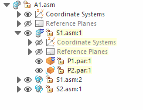
When you in-place activate a part for editing, you do not need to return to the assembly first to in-place activate another part or subassembly in the assembly.
You can select another part or subassembly in PathFinder and use the Edit command on the shortcut menu to in-place activate the component for editing. When you are finished making the design changes, you can use the Close and Return command on the Home tab to return to the original assembly.
When you in-place activate a part or subassembly for editing, you cannot collapse the assembly structure to which the part or subassembly belongs within PathFinder. For example, in the following illustration, part P2.par:1 has been in-place activated and it is in subassembly S1.asm. If you click the minus Collapse symbol adjacent to S1.asm to collapse its structure, it will remain expanded.
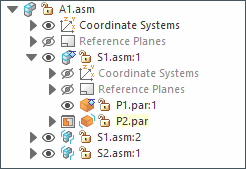
Changing the display status of assembly components
You can use the top pane of PathFinder to control the display status of assembly components. For example, you can hide parts and subassemblies to make it easier to position a new part you are placing in an assembly. You can use the check boxes adjacent to the assembly components in PathFinder to control component display or shortcut menu commands when one or more components are selected.
The color of the text in PathFinder also indicates whether a component is displayed or hidden.
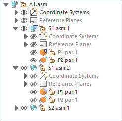
Reordering parts within an assembly
PathFinder allows you to drag a part to a different position within an assembly. As you drag the part, PathFinder displays a symbol to show where you can reposition the part in the assembly structure. The part is positioned below the highlighted part occurrence in PathFinder.
Grouping parts and subassemblies within an assembly
PathFinder allows you to select a set of parts or subassemblies in the active assembly, then specify that the selected components are a group using the Group command on the shortcut menu. The set of components is then collected into a group entry in PathFinder. You can then expand, collapse, or rename the group to a more logical name. Defining a group of parts reduces the space requirements for a set of parts, and allows you to gather together a set of similar parts into a logical group. This can make it easier to select the parts for other operations, such as displaying and hiding a set of parts.
You cannot select nested parts or nested subassemblies.
Grouping components is also useful when working with large assemblies that contain few or no subassemblies. You can select a set of parts, define them as a group with the Group command on the PathFinder shortcut menu, then use the Rename command to rename the group to a more logical name.

Some assembly commands create a group of components automatically. For example, the Move Components command creates a group entry in PathFinder when you set the Copy option on the command bar.
You can ungroup a group using the Ungroup command on the shortcut menu when a group is selected in PathFinder.
The Select Components command, on the shortcut menu when you select a group entry in PathFinder, activates additional commands and options for manipulating groups that would otherwise not be available. For example, after selecting a group with the Select Components command, you can then apply a face style to the group of parts, or transfer the group of parts to another assembly.
Renaming PathFinder entries
You can use PathFinder to rename an entry for an assembly reference plane, sketch, group, or coordinate system. To rename an entry, select it in PathFinder, right-click and then click Rename. In the name box, enter the new name for the entry.
Finding parts using the Scroll To command
In a complex or unfamiliar assembly, it can sometimes be difficult to determine which subassembly a particular part is contained in. You can use the Scroll To command to quickly find a part in PathFinder. When you select a part in the assembly window, then click the Scroll To command on the shortcut menu, the display of PathFinder scrolls to the selected part. If the part is in a subassembly, the listing for the subassembly is expanded to display the part.
To automatically scroll to a selected part, set the option Auto scroll in assembly PathFinder, on the assembly tab in Solid Edge options. When this option is set, PathFinder scrolls so that the selected part is visible in PathFinder. This is useful when working in large assemblies.
Replacing the file name with the document name formula value
You can use the Document Name Formula dialog box to replace the file name displayed in PathFinder with a value composed of document properties. Refer to the Replace a file name with a property value help topic for instructions.
You can combine properties with additional characters to replace the file name. For example, you can separate two properties with dashes, such as Document Number–Revision Number.
If a property does not exist or does not have a value, the property name is displayed in place of the property value, and the file name is displayed in parentheses after the value.
The Property list displays the properties that you can use to replace the file name. You can add a property that is not in the active document by typing [property name] in the Formula field.
Using the bottom pane
When you select a part or subassembly in the top pane of PathFinder, you can use the bottom pane to view and modify the assembly relationships between the selected part and the other parts in the assembly. The document name is also displayed, as well as a symbol that represents the type of relationship. The following table explains the symbols used in the bottom pane in PathFinder:
|
Legend |
|
|---|---|
 |
Ground relationship |
 |
Mate relationship |
 |
Planar align relationship |
|
Axial align relationship |
|
|
Connect relationship |
|
|
Angle relationship |
|
|
Tangent relationship |
|
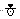 |
Cam relationship |
|
Rigid set relationship |
|
|
Center plane relationship |
|
|
Gear relationship |
|
|
Suppressed relationship |
|
|
Failed relationship |
|
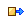 |
Driving relationship, such as a linked assembly driven part feature. |
When you select a relationship in the bottom pane you can:
-
View which elements were used to apply the relationship.
-
Edit the fixed offset value of the relationship.
-
Change the offset type of the relationship.
-
Delete the relationship.
-
Suppress the relationship
Double-click a relationship to display the edit dialog box for that relationship. When editing a relationship with missing geometry double click or edit definition will take you into a step to select and fix the missing geometry.
Shortcut menu for relationships
The shortcut menu for a relationship in the lower pane of PathFinder has the following commands:
-
Show
-
Show only
-
Zoom to
Note:Zoom to is useful for finding the geometry used to define a relationship in large assemblies.
-
Select Components
Note:Select components puts the two components used to define the relationship into a selection set.
Viewing assembly relationships
When you select a relationship in the bottom pane, the elements used to apply the relationship are highlighted in the assembly window. For example, if you select a planar align relationship, the planar faces or reference planes that were used to apply the relationship highlight in the assembly window. This can help you determine how design changes need to be applied.
Modifying assembly relationships
When you select a relationship in the bottom pane, you can use the relationship command bar to edit the fixed offset value or change the offset type. For example, you may want to change a mate relationship from a fixed offset to a floating offset.
If you change the offset type from fixed to floating, you may have to make other relationship edits to ensure that the part remains fully positioned.
Deleting assembly relationships
If you delete an assembly relationship, the symbol next to the part in the top pane changes to show that the part is no longer fully positioned. The part is also placed on the Error Assistant dialog box list. It is good practice to apply a new relationship to the affected parts as soon as possible. If you delete too many relationships without applying new ones, it could become difficult to fully position the affected parts. If this occurs, you may have to delete the affected parts from the assembly and place them again.
Replacing relationships
After you place a part in an assembly, you can replace any of its relationships. Select the part in PathFinder or in the graphics window, then click the Edit Definition button on the command bar. You can then select the relationship you want to replace from the Relationship List box on the command bar. Use the Relationship Types button to specify the new relationship you want to apply.
You can also delete the current relationship in the bottom pane of PathFinder and apply a new one using the Assemble command bar.
Conflicting relationships
If you change the design of parts in an assembly, some assembly relationships may no longer be applicable. When this occurs, the symbol next to the part or subassembly in the top pane of PathFinder will change to indicate that there are conflicting relationships and the part will be placed on the Error Assistant dialog box list.
When you select the conflicted part or subassembly, the symbols for the affected relationships in the bottom pane of PathFinder are displayed in red. You can then evaluate the relationship scheme to determine how to repair the assembly. For example, you can delete the affected relationships and apply new relationships to fully position the part.
Suppressing assembly relationships
You can use the Suppress command on the shortcut menu to temporarily suppress an assembly relationship for a part. Suppressing an assembly relationship allows you to use the Drag Part command to evaluate how the part interacts with other parts in the assembly. When you suppress an assembly relationship, the symbol for the part in the top pane of PathFinder changes to indicate that the part is no longer fully positioned. Also, a symbol is added adjacent to the suppressed relationship in the bottom pane to indicate that the relationship is suppressed.
You can use the Unsuppress command on the shortcut menu to unsuppress the relationship.
Displaying document status in PathFinder
You can display the document status for components in PathFinder. The Manage→Document Status→Display Status command on the PathFinder shortcut menu turns on and off the display of symbols adjacent to the document names in PathFinder.
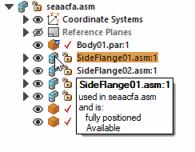
|
Legend |
|
|---|---|
 |
Available |
 |
In Work |
 |
In Review |
 |
Released |
 |
Baselined |
 |
Obsolete |
Dashed line in the bottom pane
Often a dashed line is displayed between sets of relationships in the bottom pane of PathFinder. The relationships above the dashed line were applied to parts that are above the selected part in the top pane of PathFinder. The relationships below the dashed line were applied to parts that are below the selected part in the top pane of PathFinder. You can edit the relationships above the dashed line and below the dashed line. For example, when you select Valve01.asm, the relationships above the dashed line were applied to Body01.par, which is above Valve01.asm in the top pane of PathFinder. The relationships below the dashed line were applied to Handle01.par and NutM15.par, which are below Valve01.asm in the top pane of PathFinder.
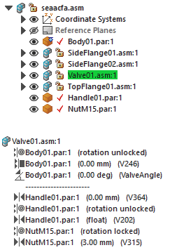
Managing relationships in nested assemblies
PathFinder can show relationships applied outside the active assembly. You can view the relationship by clicking the part in PathFinder.
How do I
Select a part with PathFinderUse multi-select within Assembly PathFinder
Activate parts in an assembly
Inactivate parts in an assembly
Display All Profile Elements
Change an assembly component in the Assembly environment
Find a part in an assembly
Find a part in an assembly using a quick query
Scroll to a part
Collapse an assembly in PathFinder
Show and hide components in an assembly
Reorder parts in an assembly
Display or update the status information for documents
Unload Hidden Parts from Memory
Expand an assembly in PathFinder
Hide all the reference planes in an assembly
Hide the unselected parts in an assembly
Hide unselected profile elements
Look up more details
PathFinder tab (Assembly environment)Toggle the display status of assembly components